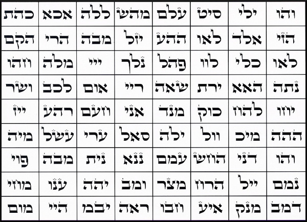

Krok 1.
Nejprve si vytiskněte na tiskárně počítače rámeček se 72 jmény níže a pak si vezměte fix nebo pero a zamažte každé ze 3 hebrejských písmen v rámečcích.
Po skončení papír roztrhejte na kousky a vhoďte ho do záchoda a ujistěte se, že jste se na něm „vyřádili“, a pak ho spláchněte. Ujistěte se, že papír, na který ho vytisknete, byl tenký a neucpe vám toaletu.
NEBO ho můžete znesvětit jiným způsobem, například otřením o vaší botu a vhozením do odpadních vod. Nebojte se, démoni vám mohou dát nápady. Jde o to, abyste to poskvrnili co nejprohnilejším způsobem. Jedná se o vrcholné rouhání a útok proti nepřátelskému tzv. „Bohu“ .To můžete udělat tolikrát, kolikrát chcete, čím vícekrát, tím lépe.

Krok 2.
Totéž proveďte s níže uvedeným seznamem „Božích jmen“ poskytnutým níže. Každé z nich důkladně zamažte. A pak s papírem udělejte totéž.
Pomáhá také, abyste při tom nashromáždili co nejvíce nenávisti. Až skončíte, tak řekněte buď nahlas, nebo v duchu: SLÁVA SATANOVI!!!
Brzy také obrátíme tato „Boží jména“ a budeme je vibrovat pozpátku.
YHVH
YAH
EL
SHADDAI
TSVA’OT
HASHEM
ADONAI
EHYEH ASHER EHYEH
HAMAKOM
ELOHIM
EL ELYON
EL GIBBOR
EL OLAM
Kliknutím sem získáte kopii této stránky ve formátu pdf.
Zpět na hlavní stránku reverzními rituály